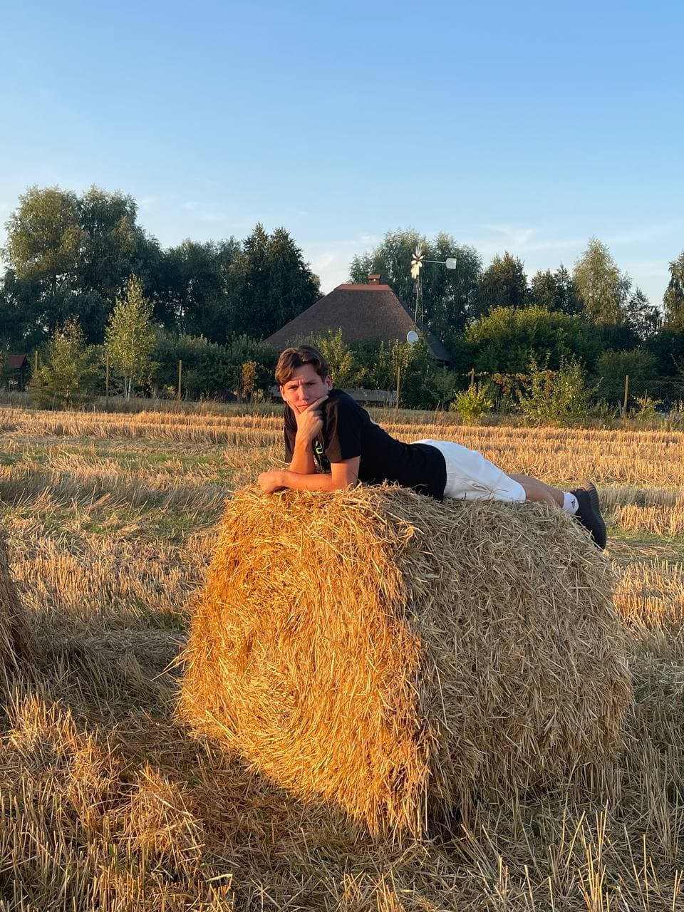

|  |
Привіт! Мене зовуть Ярослав
|
| Спорт | ⭐️⭐️⭐️⭐️⭐️ | Комунікабельність | ⭐️⭐️⭐️⭐️ |
| Кулiнар | ⭐️⭐️⭐️ | Критичне мислення | ⭐️⭐️ |
| Фотограф | ⭐️⭐️⭐️⭐️ | Малювання | ⭐️ |
| Лень | ⭐️⭐️⭐️⭐️⭐️ | Музикальний слух | ⭐️⭐️⭐️⭐️⭐️ |
| Учеба | ⭐️ | Творчiсть | ⭐️⭐️ |
| Контакти: | Посилання на інші сторінки |
e-mail: yalecseev7@gmail.com | Хобі |
телефон: +380971088888 | Зворотнiй звязок |